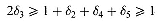
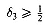
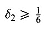

sometimes made possible by considering the practical situation being modelled. In this section we will be concerned with rather less obvious transformation of an IP model. Again the aim will be to make the model easier to solve.
Tightening Bounds
In Section 3.4, part of the procedure of Brearley, Mitra and Williams (1975) for simplifying LP models was outlined. The full application of that procedure involves removing redundant simple bounds in an LP model. It is not, however, generally worthwhile removing redundant bounds on an integer variable. Instead it is better to tighten the bounds if possible. The argument for doing this is similar to some of the reformulation arguments used in the last section. By tightening bounds the corresponding LP problem may be made more constrained resulting in the optimal solution to the LP problem being closer to the optimal IP solution. In order to illustrate the procedure a small example from Balas (1965) will be used. This example was also used in the description of the procedure given by Brearley, Mitra and Williams.
Example 1
The di are all 01 variables.
(1) By constraint (R3)

Hence

Since d3 is an integer variable this implied lower bound may be tightened. In this case (since d3 is 01) d3 may be set to 1 and removed from the problem.
(2) By constraint (R2)
Hence

Similarly the lower bound of d2 may be tightened to 1 so fixing d2 at 1.